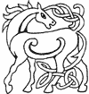
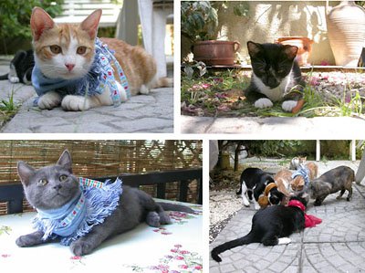
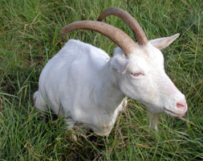
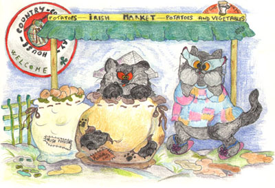
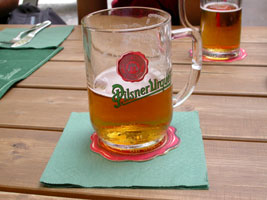
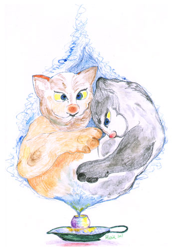

Viaggio in Irlanda
ovverosia
odissea felina di birre, cozze, leggende e cornamuse, gatti scambiati per patate e donzelle reincarnate
Giungeva dall’Italia, allegro un torpedone
Capeggiato d’Anselmo, inclito cicerone.
Era così composto il pittoresco gruppo:
Anselmo in sahariana del 15-18
Calzini americani, ombrellone e panciotto
Mommy la dark lady con infradito ai piedi
Occhialoni a farfalla, vagamente orientali
Che a guardarli di notte ti sembravan fanali.
Bimba, l’unica figlia in mise arancio triglia
Con ombelico al vento da suscitar spavento.

Piffy con i figlioli in divisa da scout
Che quando li vedevi si creava un black-out
Willa avea optato per un abito corto
Di foggia tardo impero con strascico severo
Già tunica regale d’un romano antenato
Ormai morto e sepolto che pareva un involto.
Alfin seguia Joao, gattino a pelo corto
Per imparar l’Inglese venia a proprie spese
Da una scuola privata di lustrissima data.
E scesi dall’aereo sull’agognato suolo
S’accorgon immantinente d’aver sbagliato volo.
Non è la verde Irlanda bensì un rifornimento
Di merci per l’Uganda.
Prima presi a pedate, quindi estradati
E alfine reimbarcati, riparton verso Dublin
Alquanto concitati.

Dopo una notte e un giorno nella stiva bestiame
Con tre capre gallesi dall’alitaccio infame
Arrivano gli eroi puzzando di letame.
Nella hall li aspetta una grigiastra guida
Di madrelingua inglese ma d’aspetto siamese.
Innalza uno striscione con su scritto:
“WELCOME !”
e Mommy gli risponde:
“YES, WE ARE AT HOME!”
Felice il torpedone segue lo spelacchiato
Che li conduce al taxi d’un tassista ubriaco.
Dopo diversi giri, qualche sosta, una birra
“ECCOCI IN ALBERGO…!”
esclama allegra Willa.
Qui vengon sistemati in un vecchio solaio
Scelto proprio da Piffy accanto al fiume Liffey
Con vista sopra il ponte e birreria di fronte.
Dopo una bella doccia sulle dolenti zampe
Inizia il torpedone, allegro l’escursione
Verso le verdi lande.
Prima tappa Dublino, un pub e un Irish coffè
Per sgranchirsi i gropponi e menare due graffi.
E mentre lieta la truppa riprende il panorama
Inebetita Mommy si strappa la sottana.
Un gruppo di ribelli gatti scozzesi snelli
Adocchiano la pupa mentre qualcuno fusa
Facendo apprezzamenti sugli undici pezzenti.
Anselmo contrariato per quell’incontro ingrato
Addenta gli zamponi dei celti villanzoni.
E proprio sotto la statua della bella Molly Malone
Volano insulti e graffi su code e sui groppon.
Nell’allegro spirito della Comunità Europea
Il viaggio si trasforma in mitica epopea.
Sedata la rivolta di quei facinorosi
S’incammina il gruppetto lasciando quegli irosi
Barbuti e un po’ villosi.
Bimba intanto ripensa, commossa alla Malone
Di cozze venditrice, mentre addenta un melon.
E sogna cozze e gamberi, salmoni affumicati
E biondi marinai dai suoi occhi stregati
Che suonano per lei pifferi e cornamusa
Dicendole in gaelico:
“GIOIA, FAMMI LE FUSA!”.
Around San Patrizio, già pensa bene Anselmo
Di togliersi uno sfizio.
Lo sfizio di pappare una vera birra irlandese
Per poterne parlare al ritorno al paese.
Così trovato un pub aperto di mattina
Fra le zampe contento di Guiness una lattina
Sullo sgabello Anselmo… pare preciso un merlo.
Ordina la sua birra con accento etneo
Che sembra proprio un celta uscito dal museo.
E poi un orange juice e coke and pizza and coffè
A sandwich with a tuna a salad without rostbeef.
Finalmente placata la sete culturale
L’illustre si riposa con in testa un giornale.
Ma un vecchio contadino che vendeva patate
Lo scambia per un tubero prendendolo a pedate.
Immantinente sveglio e sorpreso per quel botto
Anselmo si ridesta avvolto in un fagotto.
Rivenduto al mercato come pregiata merce
Un po’ d’importazione nel reparto cipolle
S’accorge quel gran gatto che il sangue gli ribolle.
E presolo di mira quel villico distratto
Quattro graffi gli molla con un tremendo salto.
Chiarita la questione, Anselmo il siciliano
Si ricongiunge al gruppo che lo aspettava invano.
Mommy quando lo vede esclama:
”ARE YOU FINE?”
E Anselmo le farfuglia:
“YES, THIS IS MY NAME”
Essendosi compresi quasi alla perfezione
Si scambiano due kisses ciascuno sul groppone.

Quindi per festeggiare l’amico ritrovato
Decidono di fare un party sopra il prato.
Ma non sanno i tapini che proprio lì vicino
C’è un circolo sportivo di gattacci tifosi
Sempre molto incazzati, perennemente irosi.
Avendo ancora impressa una vecchia sconfitta
Per niente digerita e ancora non sopita
I giganteschi celti circondano quei gatti
E presto le parole si trasformano in fatti.
“Birbante d’italiano, fetente e spelacchiato
spaghetti e maccarone, dimmi dov’era l’arbitro
mentre entrava il pallone, gran pezzo di cialtrone!?!?”

Anselmo che di pallone non ne capisce niente
Non intende l’insulto del tifoso fremente.
E datogli le spalle al rosso ubriacone
Richiama la sua banda riunendo il torpedone.
Ma si sente bloccare alle spalle la coda
Dalla presa possente di una zampaccia ignota
E viene strattonato con una certa foga…
Quel mostruoso gattaccio dal dorato pelame
Afferra il siciliano come fosse un salame.
 E giù botte da orbi sopra il sacro groppone
E giù botte da orbi sopra il sacro groppone
Fra il gatto saltellante che pare un leprecone
E l’erede di Cesare quasi fosse un salame.
La turba immantinente prende così coscienza
E di menar le zampe si concede licenza.
Mommy con grande salto e triplo avvitamento
Piomba su quel tifoso mordendogli anche il mento.
Bimba, messa da parte tutta la timidezza
Con le unghie dipinte, la coda gli accarezza.
I piccoli riuniti come un coro verdiano
Intonano l'Aida su quel grande villano.
E ancora quasi non mi sembra vero
Mi pare di sentire “Va pensiero”
Un gruppo di turisti diretti in Colorado
Riprendono quel “match” e trattengono il fiato.
Un marinaio in pensione, di stanza a Singapore
Pensando ad uno show causato dal calore
Vuole fotografare la strana e pittoresca rappresentazione
Ma si becca tre morsi sull’enorme panzone.
E così per tutta la nottata… mentre Molly Malone
Osserva frastornata.
Intervenuta alfine la guardia nazionale
Un principe del foro e la Corte marziale
L’incontro fu sedato, finendo sul giornale.
Gli italiani felini vengono rimpatriati
Mentre i celti gattacci un poco scudisciati.
Il vergognoso scontro finisce in parità
Qualcuno prende morsi, qualcun altro li dà.
L’indomani mattina, con un volo diretto
Rientra il torpedone passando per Maletto.
Anselmo furibondo per lo sportivo oltraggio
Già pensa a una rivincita per il prossimo maggio.

Ma appena scorge il mare, la sua spiaggia, il vulcano
Gli sbolle tutta l’ira e si sente un sultano.
Un poco farfuglianti e pieni d’avventura
I nostri posan la zampa fra quelle avite mura.
E davanti a un grande piatto di pasta e croccantini
Con un po’ di basilico e due pomidorini
S’addormentano lieti con le code fra i piedi…
Sognando celtici incontri di pifferi frementi
E tifosi malconci fra gighe incandescenti
E pascoli ridenti.
Ah quasi mi scordavo…
Bimba che adesso crede nella reincarnazione
Adesso s’è convinta d’esser Molly Malone
E vende cozze al mercato sbirciando ed aspettando
Che un celtico gattaccio con arpa e cornamusa
Le sussurri suadente:
“PLEASE, BIMBA… FAI LE FUSA!”
M.J.M
Luglio 2003